An exception is a relatively rare event that sometimes occurs while a program is running. For example, an exception occurs when a Python program tries to open a file for reading but that file doesn't exist. There are many different built-in exceptions that may occur while a Python program is running.
When an exceptional event occurs, a Python function raises an exception which may be handled by code at another location in the executing Python program. The Python keyword to raise an exception is raise. Normally, you will not need to write code to raise an exception because the built-in functions, such as open, int, and float, will raise an exception when necessary. You will need to write code in your programs to handle exceptions.
The Python keywords to handle exceptions are try, except, else, and finally. The following example code contains the outline of a complete try-except-else-finally block. Read the code and its comments carefully to understand the correct syntax and organization of a try-except-else-finally block.
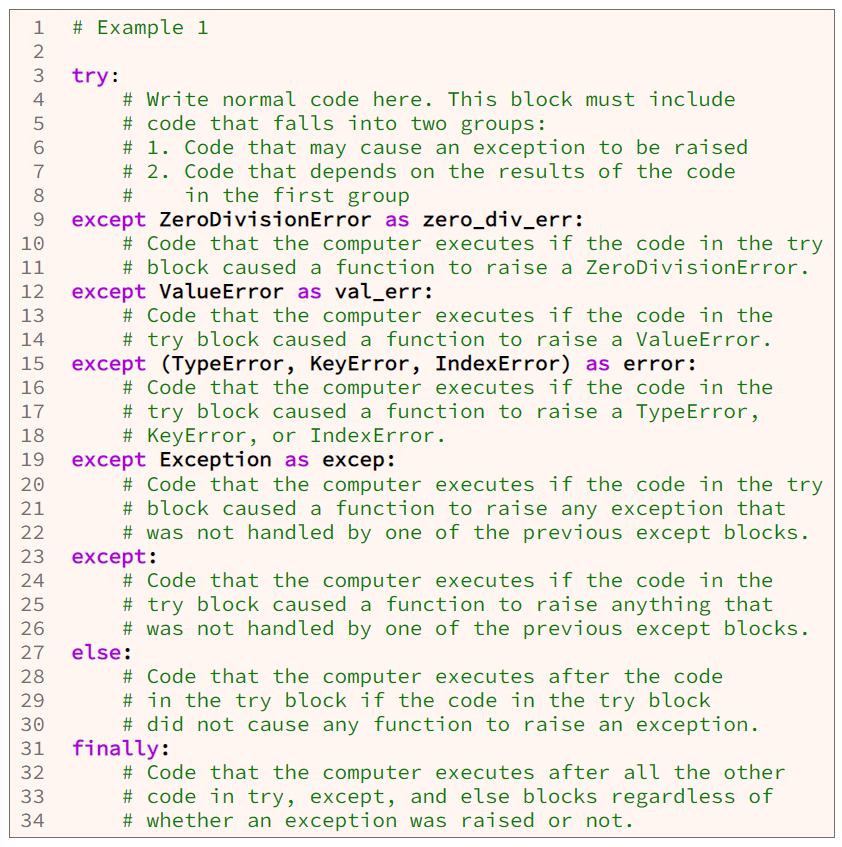As shown in example 1 above, when we want to write code that will handle exceptions, we first write a try block, and we put into that try block the normal code that might cause an exception. The we write except blocks to handle the exceptions. Each except block may handle one type of exception like the code at line 9:
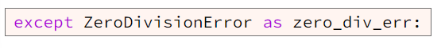Or each except block may handle several types of exceptions, like the code at line 15:
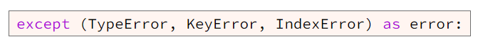Or one except block may handle all possible types of exceptions, like the code at line 19:
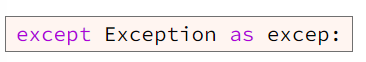Or a bare except block may handle anything that can be raised, including SystemExit, KeyboardInterrupt and GeneratorExit, like the code at line 23:
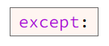The Python programming language requires us to order except blocks from most specific at the top to least specific (most general) at the bottom. However, im most programs, it is a bad idea to write except blocks that are very general, including an except block that handles all possible exception types (line 19) and a bare except block (line 23).
In a Python program, it is usually a bad idea to write an except block that handles all types of exceptions or a bare except block because such a block will handle SyntaxError. Normally, a program should not handle SyntaxError. Normally, a program should not handle SyntaxError. Instead, a program should crash for a syntax error and print the line number where the syntax error occurred so that a programmer can find and fix the syntax error. Syntax errors are caused by a programmer mistyping code and not by bad user input or missing files. A programmer should find and fix all syntax errors in a program before the program is given to users, so there is no reason to handle syntax errors in an except block.
As shown at line 27 in example one above, following the except blocks, a programmer may write an optional else block which the computer will execute if the try block does not raise any exceptions. However, it is uncommon to write an else block for try and except blocks because any code that ould be written in an else block of try and except could also be written at the end of the try block. Professional programmers almost never write an else block for try and except blocks.
As shown at line 31 in example 1 above, at the end of the exception handling code, a programmer may write an optional finally block. The finally block contains code that the computer executes after all the other code in the try, except, and else blocks regardless of whether an exception was raised or not. The code in the finally block usually contains "clean up" code that frees resources that the code in the try block used.
There are many different types of built-in exceptions that may occur while a Python program is running. This section shows how seven types of exceptions may occur.
The computer raises a TypeError when the code that calls a function passes an argument with the wrong data type. The code in example 2 attempts to pass a string to the round function. This causes the computer to raise a TypeError because the round function cannot round a string to an integer. It can round only a number to an integer. The output below example 2 shows that the computer raised a TypeError.
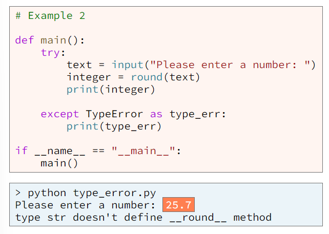The computer raises a ValueError when the code that calls a function passes an arguemtn with the correct data type but with an invalid value. A common event that causes the computer to raise a ValueError is when the int function or float function tries to convert a string to a number but the string contains characters that are not digits. The code in example 3 and its output show a ValueError.
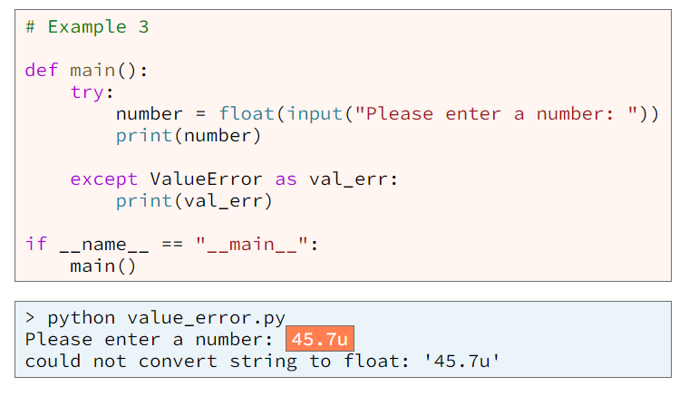The computer raises a ZeroDivisionError when a program attempts to divide a number by zero (0) as shown in example 4 and its output.
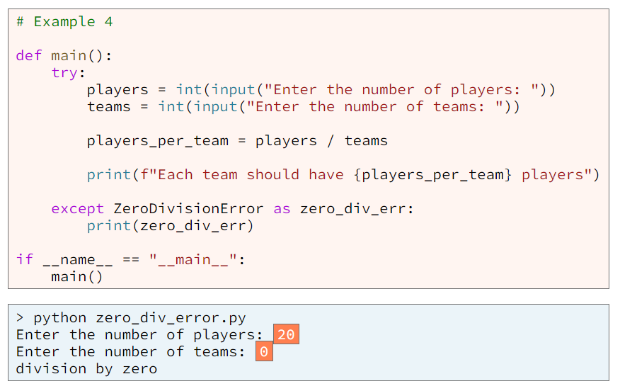Recall that each element in a list is store at a unique index and that an index is always an integer. If we write code that tries to use an index that doesn't exist in a list, when the computer executes that code, the computer will raise an IndexError. The program in example 5 creates a list that contains three surnames. Then the program attempts to change the surname at index 3. Of course, the list contains only three elements, and the index of the last element is 2, so the statment fails and causes the computer to raise an IndexError.
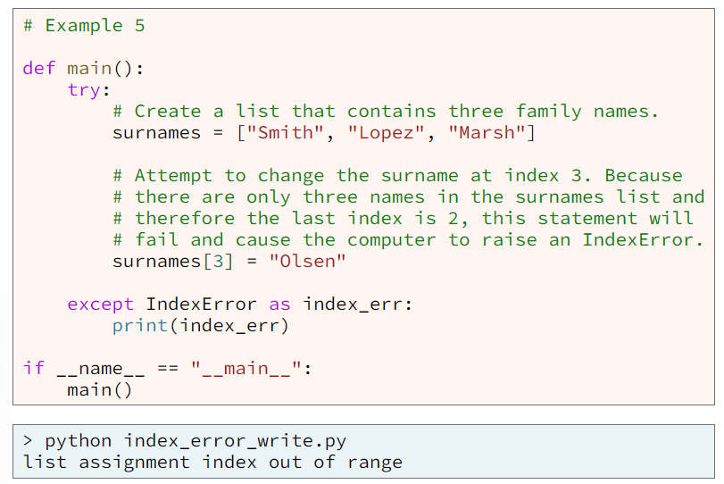The program in example 6 is similar to example 5, and both programs cause the computer the raise an IndexError. The program in example 6 creates a list that contains three surnames. Then the program attempts to print the surname at index 3. Of course, this statement fails because the list contains only three elements, and the index of the last element is 2.
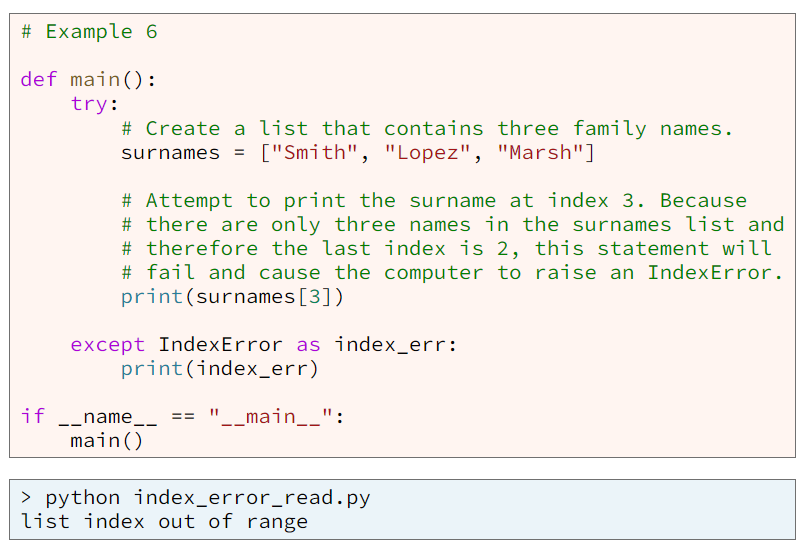As shown in example 7, if we write code that attempts to find a key in a dictionary and that key doesn't exist in the dictionary, then the computer will raise a KeyError.
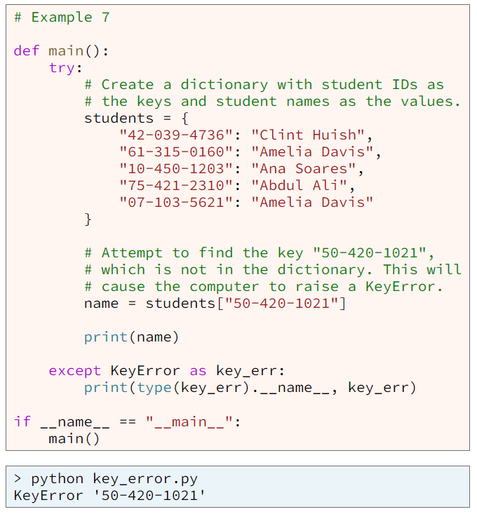Of course, it is very unlikely that programmer would write a program that ries to find a hard-coded key that is not in a dictionary. However, it is common for user to enter a key that in not in a dictionary.
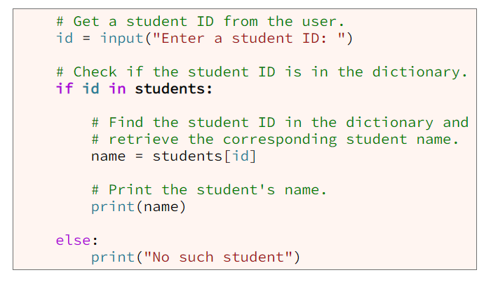If we write a call to the open function that attempts to open a file for reading and that file doesn't exist, the computer will raise a FileNotFoundError. Example 8 contains code where such an error might occur.
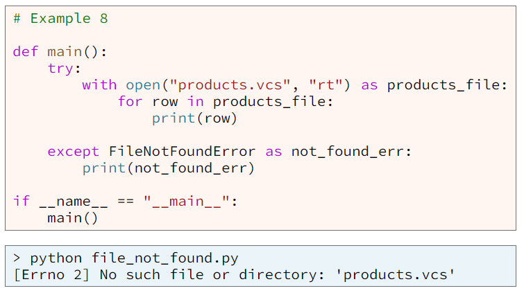Nearly all computer operating systems, such as Mircosoft Windows, Mac OS X, and Linux, allow multiple people to use a single computer. Because people need to store private data in files on a computer, the operating systems implement file access permission rules. These rules help to prevent unauthorized access to files.
If we write a call to the open function that attempts to open a file and the person executing our program doesn't have permission to access the file, the computer will raise a PermissionError. Example 9 contains code where such an error might occur.
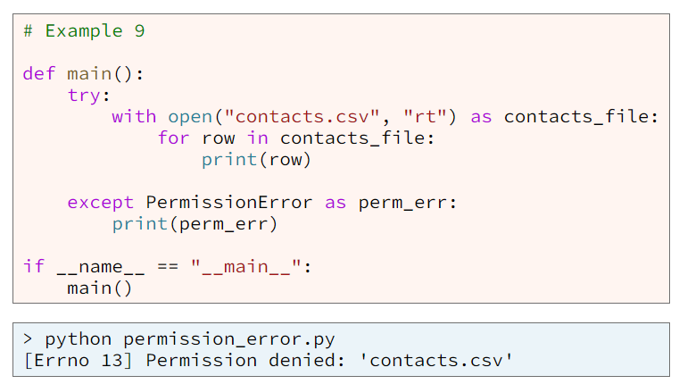Example 10 contains a complete program with except blocks to handle two types of exceptions: ValueError and ZeroDivisionError.
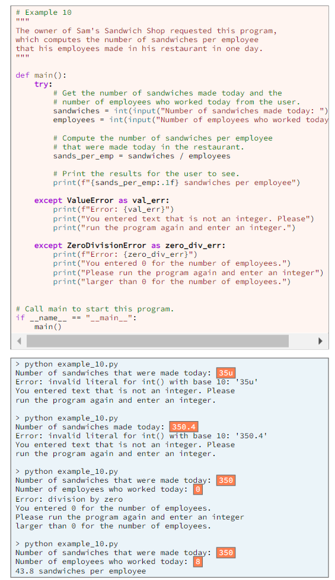